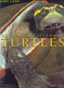

|


|
|

|
|
El Maravilloso Mundo de las
Tortugas. Manuel
Merch�n.
478 p�ginas, 1992, Editorial
Antiqvaria. |
|
|
Gu�a de identificaci�n de CITES �
Tortugas. Ministerio
del Medio Ambiente del Canad� y PROFEPA (SEMARNAP).
232 p�ginas, 1999.
DISPONIBLE ONLINE. |
|
|
La crianza de tortugas gigantes
en cautiverio: Un
manual operativo.Cruz
M�rquez, Linda Cayot, Solanda Rea.
120 p�ginas, 2000, Fundaci�n
Charles Darwin. |
|
|
La tortuga mora
en Do�ana.
Ana C. Andreu,
Carmen D�az-Paniagua, Claudia Keller.
70 p�ginas, 2000,
Asociaci�n Herpetol�gica Espa�ola, "Monograf�as de Herpetolog�a",
Volumen 5. |
|
|
La tortuga mora
en la Regi�n de Murcia.
Andr�s Gimenez
Casalduero, Miguel �ngel Esteve Selma, Irene P�rez Ibarra, Jose
Daniel Anad�n Herrera, Marcelo Mart�nez Palao, Julia Mart�nez
Fern�ndez, Jose Antonio Palaz�n Ferrando.
92 p�ginas, 2004,
Diego Mar�n Librero Editor |
|
|
Todo Tortugas y Gal�pagos.
Vincenzo Ferri.
255 p�ginas, 2001, Editorial
Grijalbo. |
|
|
Tortugas de Espa�a.
Manuel Merch�n, Albert Mart�nez
Silvestre.
399 p�ginas, 1999, Editorial
Antiqvaria. |
|
|
Tortugas de las Regiones aridas
de Argentina. Enrique
Richard.
224 p�ginas, 1997, L.O.L.A. |
|
|
Tortugas terrestres y acu�ticas
del mundo. David
Alderton.
191 p�ginas, 1994, Editorial
Omega. |
|
 |
|
|
Age Determination in Turtles.
Georger R. Zug.
400 p�ginas, 1991, Society for
the Study of Amphibians & Reptiles. |
|
|
A Guide to the Tortoises of
Namibia. Cunningham,
P.
20 p�ginas, 2006, Windhoek. |
|
|
Anatomy of the Tortoise.
James Stuart Thomson
136 p�ginas, 2006 (1932),
Bibliomania. |
|
 |
A Revised Checklist with
Distribution Maps of the Turtles of the World.
John B. Iverson.
363 p�ginas, 1992, J. P. Iverson
Publishing. |
|
|
Asian turtle trade.
Varios.
164 p�ginas, 2000, Chelonian
Research Foundation. |
|
 |
Australian Freshwater Turtles.
John Cann.
291 p�ginas, 1998, Beaumont
Publishing. |
|
|
The Alligator Snapping Turtle:
Biology and Conservation.
Peter C.H. Pritchard.
152 p�ginas, 2006, Krieger
Publishing Company. |
|
|
Biology of the Snapping Turtle:
Chelydra Serpentina. AC
Steyermark.
240 p�ginass, 2008, John
Hopkins University Press. |
|
 |
Biology of Turtles
Jeanette Wyneken (Editor), Matthew
H. Godfrey (Editor), Vincent Bels (Editor)
408 p�ginas, 2008, CRC. |
|
|
Congr�s International sur le
genre Testudo. Actes du Congr�s. / International Conngress on the
Genus Testudo.Proceedings. (Chelonii, Volumen 3.)
Varios Autores.
376 p�ginas, 2002, Editions
Soptom. |
|
|
Conservation and Ecology of
Turtles of the Mid-Atlantic Region.
Christopher W. Swarth, Willem M.
Roosenburg, Erik Kiviat.
132 p�ginas, 2004, Bibliomania. |
|
|
Diamonds in the
Marsh: A Natural History of the Diamondback Terrapin.
Barbara Brennessel.
219 p�ginas, 2006,
University Press of New England.
|
|
|
Encyclopedia of Turtles.
Peter C.H. Pritchard.
895 p�ginas, 1979, T.F.H.
Publications. |
|
|
Giant Tortoises of the Indian
Ocean. Justin Gerlach.
208 p�ginas, 2004, Edition Chimaira. |
|
|
Handbook of Indian Testudines.
BK Tikader, RC Sharma.
156 p�ginas, 1985, p�ginas. |
|
|
Handbook of Turtles: The Turtles of
the United States, Canada, and Baja California.
Archie Carr.
560 p�ginas, 1995, Cornell
University Press. |
|
|
Life History and Ecology of the
Slider Turtle. J.
Whitfield Gibbons, George R. Zug.
384 p�ginas, 1993, Smithsonian
Books. |
|
|
Living Turtles of the World.
Peter C.H. Pritchard.
128 p�ginas, 1967, T.F.H.
Publications. |
|
|
Michigan Turtles
and Lizards: A Field Guide and Pocket Reference.
James J. Harding, J.
Alan Holman.
94 p�ginas, 1997,
Michigan State Univ Bulletin Office.
|
|
|
Musk Turtle Sternotherus odoratus.
John B. Iverson, Richard C. Paull.
78 p�ginas, 2005, Sumterville. |
|
|
North American Box Turtles: A
Natural History. C.
Kenneth Dodd.
260 p�ginas, 2001, University of
Oklahoma Press. |
|
 |
On the variability of Cuora
trifasciata. Blank T.,
McCord W., Le, M
153 p�ginas, 2006, Editions
Chimaira. |
|
|
Photographic
Guide to the Turtles of Thailand, Laos, Vietnam and Cambodia,
Phnom Penh.
B.L. Stuart, P.P.
van Dijk & D. B. Hendrie.
83 p�ginas, 2001,
Wildlife Conservation Society.
|
|
|
Proceedings: Conservation,
Restoration, and Management of Tortoises and Turtles.
Varios autores.
494 p�ginas, 1997, New York
Turtle and Tortoise Society. |
|
|
Proceedings of EMYS Symposium,
Dresden 96 Lenk P.,
Joger U., Fritz U., Heidrich P. y Wink M.
302 p�ginas, 1998, Mertensiella. |
|
|
Reptilian Incubation: Environment,
Evolution and Behaviour.
Charles Deeming (Editor).
360 p�ginas, 2004, Nottingham
University Press. |
|
|
Restoring the tortoise dynasty:
the decline and recovery of the Galapagos giant tortoise.
Godfrey Merlen.
? p�ginas, 1999, Charles Darwin
Foundation. |
|
|
Status and conservation of
turtles of the north western U.S.
Thomas F. Tyning (Editor).
53 p�ginas, 1997, Chelonian
Research Foundation y The New England Herpetological Society. |
|
|
Studies on the Anatomy of Turtle
- Lyssemys punctata granosa.
Ansari, N.U.
68 p�ginas, 2006, Delhi. |
|
|
Testudinates of China.
Wang Peichao.
71 p�ginas, 2000. |
|
|
The Australian Pig-Nosed Turtle.
Arthur Georges, J. Sean Doody,
Jeannie Young, John Cann.
35 p�ginas, 2000, CRC Freshwater
Ecology & University of Canberra. |
|
|
The biology and status of the
Star Tortoise (Geochelone Elegans, Schoepff, 1795) in Sri Lanka.
Anslem de Silva.
100 p�ginas, 2003,
A.M.P. Print Shop. |
|
|
The Ecology,
Exploitation and Conservation of River Turtles.
Don Moll, Edward O.
Moll.
420 p�ginas, 2004,
Oxford University Press.
|
|
|
The Gigantic Land Tortoises of
the Galapagos Archipelago.
John van Denburgh.
290 p�ginas, 1998, Society for
the Study of Amphibians and Reptiles. |
|
|
The Gopher Tortoise: A Life
History. Patricia
Sawyer Ashton, Ray E. Ashton .
67 p�ginas, 2004, Pineapple Press. |
|
|
The Reproductive Biology of the
Chelonia. Gerald
Kuchling .
212 p�ginas, 1999, Springer-Verlag. |
|
|
The Natural History and
Management of the Gopher Tortoise Gopherus polyphemus.
Ray E. Ashton, Patricia S. Ashton,
Ghislaine Guyot.
288 p�ginas, 2007, Krieger
Publishing Company. |
|
|
The Sonoran Desert Tortoise:
Natural History, Biology, and Conservation.
Thomas R. Van Devender (Editor)
388 p�ginas, 2002, University of
Arizona Press. |
|
|
The Southern African Tortoise
Book. A guide to southern African tortoises, terrapins and turtles.
Richard C. Boycott, Ortwin Bourquin.
228 p�ginas, 2000 (Reedici�n),
O.Bourquin. |
|
|
The Tortoises and Turtles of
Madagascar. Miguel
Pedrono.
147 p�ginas, 2008, Natural
History Publications . |
|
|
The Turtles of Russia and other
ex-Soviet Republics.
Sergius L Kuzmin.
159 p�ginas, 2002, Editions
Chimaira. |
|
|
The turtles of Venezuela.
Peter C.H. Pritchard, Pedro Trebbau.
450 p�ginas, 1984, Society fro
the study of amphibians and reptiles. |
|
|
Tortoises of Australia.
John Cann.
79 p�ginas, 1978, Angus &
Robertson. |
|
|
Turtles: An Extraordinary Natural
History 200 Million Years in the Making.
Carl J. Franklin.
160 p�ginas, 2007, Motorbooks
International. |
|
|
Turtles and Tortoises of India.
Indraneil Das.
186 p�ginas, 2002, Oxford
University Press. |
|
|
Turtles and Turtle Watching for
the North Central States.
John J. Moriarty.
57 p�ginas, 2004, Dept Natural
Resources. |
|
|
Turtle Conservation.
Michael W. Klemens (Editor).
334 p�ginas, 2000, Smithsonian
Books. |
|
|
Turtles of Borneo and Peninsular
Malaysia. Lim Boo Liat
and Indraneil Das.
151 p�ginas, 1999, Natural
History Publications. |
|
|
Turtles of the United States and
Canada. Carl H. Ernest,
Jeffrey E. Lovich, Roger W. Barbour.
578 p�ginas, 1994, Smithsonian
Institution Press. |
|
|
Turtles of the World.
Carl H. Ernst,Roger W. Barbour.
328 p�ginas, 1992, Smithsonian
Institution Scholarly Press. |
|
|
Turtles of the world Vol.1.
Africa, Europe and Western Asia.
Holger Vetter.
96 p�ginas, 2002, Edition Chimaira. |
|
|
Turtles of the world Vol.2. North
America. Holger Vetter.
127 p�ginas, 2004, Edition Chimaira. |
|
|
Turtles of the world Vol. 3.
Central and South America.
Holger Vetter.
128 p�ginas, 2005, Edition Chimaira. |
|
|
Turtles of the
world Vol.4 East and South Asia
Holger Vetter.
160 p�ginas, 2006, Edition Chimaira. |
|
 |
Turtles of the
world Vol.5 Australia and Oceania
Holger Vetter.
128 p�ginas, 2007, Edition Chimaira. |
|
|
Turtles: Perspective and reseach.
Marion Harless, Henry Morlock.
712 p�ginas, 1989, Krieger
Publishing Company. |
|
|
Turtles, Tortoises and Terrapins:
Survivors in Armor.
Ronald Orenstein.
304 p�ginas, 2001, Firefly Books. |
|
 |
|
|
La cistude.
Jean Fran�ois Hellio, Nicolas Van
Ingen.
30 p�ginas, 2004, CPIE Brenne. |
|
 |
La cistude d Europe.
Cadi Antoine, Faverot Pascal.
108 p�ginas, 2004, C.R.A. |
|
 |
La Tortue d'Hermann.
Bruno Porlier.
39 p�ginas, 1993, BT Nature. |
|
|
La tortue qui pleure / The crying
tortoise : Geochelone sulcata.
Bernard Devaux.
87 p�ginas, 2000, Editions
Soptom.
Biling�e Franc�s/Ingl�s. |
|
|
La tortue sauvage.
Bernard Devaux.
145 p�ginas, 1988, Sang de la
Terre. |
|
|
Les tortues de l'Indochine
Ren� Leon Bourret
236, 2005 (1941) , Editions
Society for the study of amphibians and reptiles |
|
|
Les Tortues.
Marc Collignon.
59 p�ginas, 2005, S.A.E.P. |
|
|
Les Tortues.
Bernard Devaux.
189 p�ginas, 1995, Sang de la
Terre. |
|
|
Les tortues en 100 questions.
Bernard Devaux.
187 p�ginas, 2000, Sang de la
Terre. |
|
|
Programme de conservation de la
tortue d hermann.
Varios autores.
43 p�ginas, 2002, Editions
Soptom. |
|
|
Tortues.
J. Lehrer.
127 p�ginas, 1991, Edimages. |
|
|
Tortues continentales de Guyane
fran�aise. S�bastien
M�trailler, Georges Le Gratiet.
128 p�ginas, 1996, CITS. |
|
|
Toutes les tortues du monde.
Franck Bonin, Bernard Devaux , Alain
Dupr�.
254 p�ginas, 1996, Delachaux et
Niestl�. |
|
 |
|
|
Asiatische Sumpfschildkr�ten Die
Familie Geoemydidae in S�dostasien, China und Japan.
Maik Schilde.
192 p�ginas, 2004, Natur und Tier-Verlag. |
|
|
Eine Naturgeschichte der
Schildkr�ten. David G.
Senn.
70 p�ginas, 1992, R + R Verlag. |
|
|
Die Europ�ische
Sumpfschildkr�te.
Heinz Wermuth.
40 p�ginas, 2006,
Westarp Wissenschaften.
|
|
|
Die Europ�ische Sumpfschildkr�te.
Uwe Fritz.
224 p�ginas, 2003, Laurenti. |
|
|
Die nat�rliche Haltung und Zucht
der Griechischen Landschildkr�ten.
Wolfgang Wegehaupt.
224 p�ginas, 2006. |
|
|
Die
Nilweichschildkr�te. Trionyx triunguis
Gramentz D.
166 p�ginas, 2005, Editions
Chimaira.
|
|
|
Die Schildkr�ten
des Indische Subkontinenets.
Indraneil Das.
183 p�ginas, 2001. Editions
Chimaira.
|
|
|
Die S��wasserschildkr�ten Europas.
Helmut Gl�B, Walter Meusel.
77 p�ginas, 1996, Westarp
Wissenschaften. |
|
|
Handbuch der Reptilien und
Amphibien Europas.
Schildkr�ten (Testudines) I (Bataguridae,
Testudinidae, Emydidae). Hrsg. v.
Uwe Fritz.
594 p�ginas, 2001, Aula. |
|
|
Handbuch der
Reptilien und Amphibien Europas. Schildkr�ten (Testudines) II (Cheloniidae,
Dermochelyidae, Fossile Schildkr�ten Europas).
Hrsg. v. Uwe Fritz.
448 p�ginas, 2005,
Aula.
|
|
|
Sardinien, die
Insel der europ�ischen Schildkr�ten.
Wolfgang Wegehaupt.
192 p�ginas, 2004,
Wegehaupt Verlag.
|
|
|
Schildkr�ten 1 - Chelydridae,
Dermatemydidae, Emydidae.
Manfred Rogner.
192 p�ginas, 1996, Heiro. |
|
 |
Schildkr�ten 2 -
alle anderen Familien.
Manfred Rogner.
266 p�ginas, 1996,
Heiro.
|
|
|
Synopsis der rezenten
Schildkr�ten mit Ber�cksichtigung der in historischer Zeit
ausgestorbenen Arten.
Siebenrock, F.
208 p�ginas, 1999, Abd.
Zoologische Jahrb�cher Suppl. |
|
|
Untersuchungen zur
Populationsstruktur und zum Sozialverhalten der Europ�ischen
Sumpfschildkr�te Emys orbicularis (Linnaeus, 1758).
Jens R Poschadel.
142 p�ginas, 2003,
dissertation.de. |
|
|
La tortuga mediterr�nia a
Catalunya. Joaquim
Soler Massana, Albert Mart�nez Silvestre.
196 p�ginas, 2005, Ediciones
L�Aguila de Cultura Popular, Colecci�n "Natura", Volumen 3. |
 
|
|